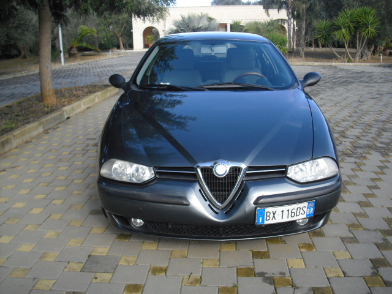
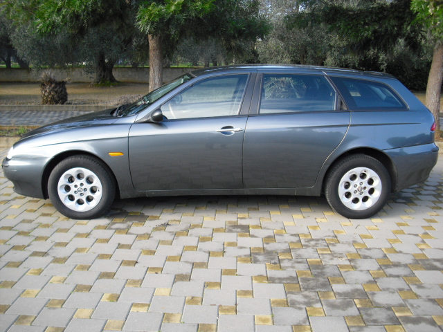
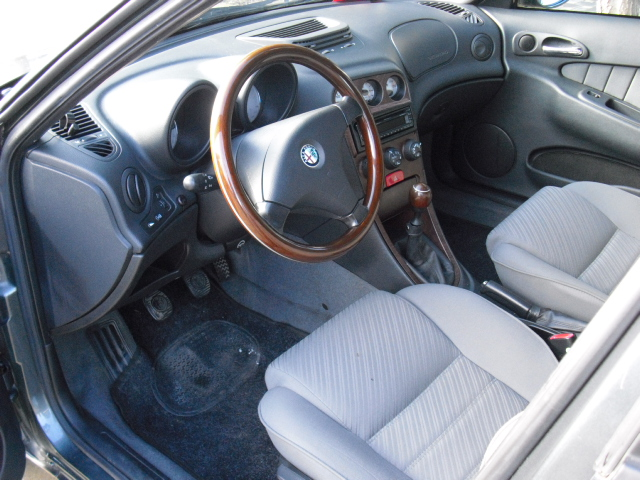

<html>
    <head>
        <meta charset="utf8">
        <meta http-equiv="cache-control" content="no-cache">
        <meta name="viewport" content="width=device-width, initial-scale=1">
    </head>
    <style>
        body{margin:0;}
        carousel-dotted, carousel-default, carousel-preview{
            margin: auto;
            margin-top: 5em;
        }

       @media screen and (max-width:600px) {
            carousel-dotted, carousel-default, carousel-preview{
                 --carousel-size-width-custom: 100% !important;
                 --carousel-size-height-custom: 70vw !important;
            }
        }
    </style>
    <body>

        

        <!-- <carousel-dotted width=300 height=200 drag loop fullscreen>
            </img-lazy>
            </img-lazy>
            </img-lazy>
        </carousel-dotted>
         -->
        <carousel-preview loop width=640 height=480 progression fullscreen drag timer=0 size-img>
            <!-- </img-lazy> -->
            </img-lazy>
            </img-lazy>
            </img-lazy>
            </img-lazy>
        </carousel-preview>
        
        <carousel-default width=300 height=200 drag loop navigation="dotted">
            </img-lazy>
            </img-lazy>
        </carousel-default>

        
        
        <!-- <carousel-default title='Intestazione' width=400 loop=false>
            </img-lazy>
            </img-lazy>
            </img-lazy>
        </carousel-default> -->

        <div id='log'>

        </div>
    </body>
    <script>
        const div = document.querySelector('#log')
        function log(s){
            console.debug(s)
            div.innerHTML = `<p>${s}</p>` + div.innerHTML
        }
    </script>
    <script src="placeholder.js" defer></script>
    <script src="imglazy.js" defer></script>
    <script src="carousel.js" defer></script>
    
</html>
